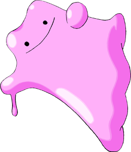
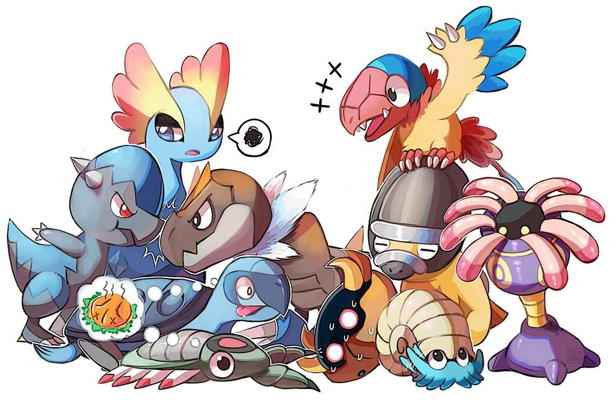
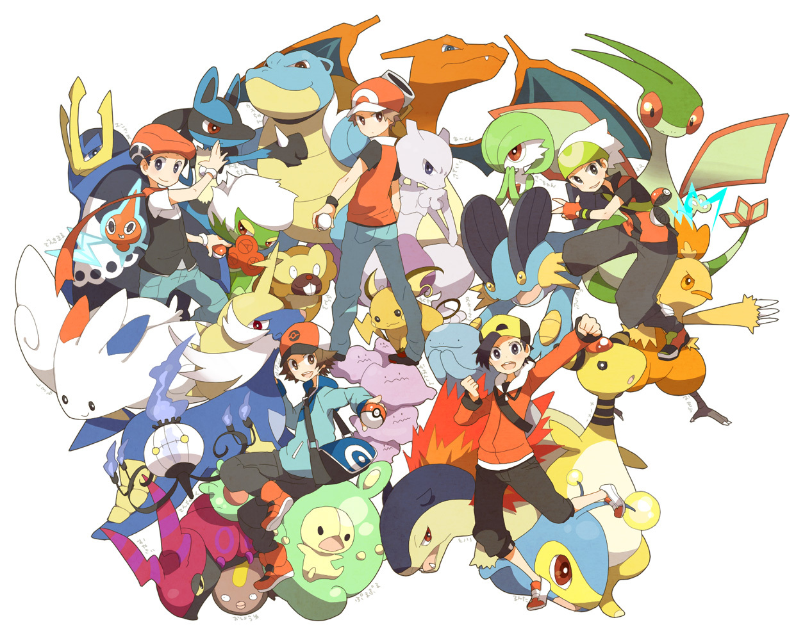
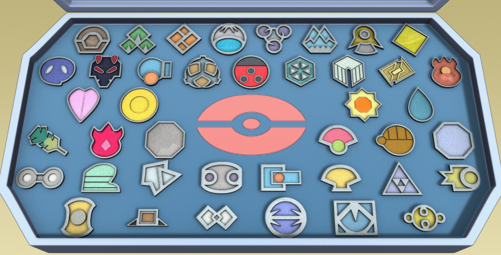

Article
Покемон Дитто
Эш Кетчум 21/10/2019
Ценнейшей находкой для тренера считается покемон Дитто. Разумеется, сложно сказать, что в мире Pokémon он считается сильно редким, но встречается, все равно, не повсеместно. Зато заполучив этого покемона, игрок открывает для себя множество интересный вещей.
Читать большеДревние покемоны
Мисти 19/10/2019
Ископаемые или древние покемоны — доисторические существа, которые уже не встречаются в дикой природе вселенной Pokemon, Единственное, что эти покемоны оставили, древние окаменелости: скелеты, раковины, листы и так далее.
Читать большеЧто такое Лига Покемонов?
Трейси Скетчит 15/10/2019
Если говорить просто, Лига Покемонов — общерегиональное соревнование в покемон сеттинге. Сейчас известно по меньшей мере 8 областей, где учреждена собственная Лига Покемонов, — главные локации основной серии игр Pokemon. В этом соревновании тренерам необходимо при помощи силы их покемонов пройти ряд испытаний, которые покажут на что способен претендент.
Читать большеПокемон значки и гим лидеры
Маллоу 10/10/2019
По концепции вселенной Покемон значки тренеры получают за победу над лидерами гимов, которые, как правило, используют однотипных покемонов. Значки — это вещественное доказательство мастерства тренера и силы его покемонов. При сборе значков необходимо путешествовать по всему региону.
Читать больше